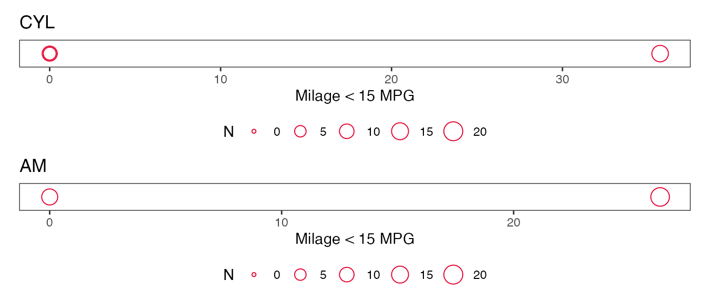

Using kpitools
kpitools.Rmdkpitools is intended to aid in creating reports on key performance indicators (KPIs). KPIs must be defined by the user, which can be a substantial undertaking, but kpitools then takes away some of the pain of putting them into a report.
kpitools is loaded as any other package, with the library or require functions:
library(kpitools)Once the KPIs are defined conceptually, it should be clear what type of indicator one needs to report. For instance, using the mtcars dataset, we may have an indicator for mileage. We’re not really interested in the individual cars, but at the group of products as a whole. If the mean mileage is lower than 15, we may have to take actions to reduce the proportion. In a clinical trial, such remedial actions might be to retrain staff or, in a particularly serious case, closing a site completely.
To use kpitools, we must first load the data and create the indicators themselves (using whatever method for a given dataset). To begin with, we will start with the mpg variable in the mtcars data.
data(mtcars)kpitools produces summary information on the defined KPIs. We tell the kpi function which dataset to use, which variable to summarize and how to summarize it (kpi summarizes using the mean by default).
x <- (kpi(data = mtcars,
var = "mpg"))
x
#> Study level:
#> txt N n_nonmiss stat
#> mpg 32 32 20.09062We see that the 32 cars have a mean MPG of 20 miles per gallon.
We can improve the output slightly by adding a more meaningful label via the txt argument.
kpi(data = mtcars,
var = "mpg",
txt = "Miles per gallon")
#> Study level:
#> txt N n_nonmiss stat
#> Miles per gallon 32 32 20.09062Summary functions
kpitools comes with a set of functions for summarizing the KPIs.
| Function | Description |
|---|---|
kpi_fns |
list all KPI summary functions in the package |
| Categorical KPIs | |
kpi_fn_n |
takes the sum of objects |
kpi_fn_prop |
calculates the proportion of 1s |
kpi_fn_perc |
as kpi_fn_prop but on percentage scale |
| Numeric KPIs | |
kpi_fn_median |
calculates the median |
kpi_fn_mean |
calculates the mean |
kpi_fn_iqr |
calculates the interquartile range |
kpi_fn_min |
calculates the minimum |
kpi_fn_max |
calculates the maximum |
| Generic KPIs | |
kpi_fn_missing |
calculates the percentage of missing values |
These functions are passed to kpi via the kpi_fn argument.
Say our KPI is on the proportion of cars with an MPG less than 15… first we create the variable and pass that to kpi with the appropriate summary function.
mtcars$mpg15 <- mtcars$mpg < 15
kpi(data = mtcars,
var = "mpg15",
kpi_fn = kpi_fn_perc,
txt = "Milage < 15 MPG")
#> Study level:
#> txt n N n_nonmiss stat
#> Milage < 15 MPG 5 32 32 15.625Using custom functions
Custom functions can also be utilized. Simply define a function which accepts a dataframe and performs the summary function of choice on a var variable. The summarised variable should be called stat. below is example to summarise the variable by the variance.
fn <- function(x){
x %>%
summarize(stat = var(var))
}
kpi(mtcars, "mpg", kpi_fn = fn)
#> Study level:
#> txt stat
#> mpg 36.3241We recommend adding an N the variable with the number of observations, which is used for plotting (the size of points is relative to the number of observations in the group).
Hierarchies
We can also look at specific subgroups (e.g. in a clinical trial, we would be interested in the performance of particular countries or centers) via the by argument. Using the mtcars example, we can use the number of cylinders.
x_by <- (kpi(data = mtcars,
var = "mpg15",
kpi_fn = kpi_fn_perc,
txt = "Milage < 15 MPG",
by = "cyl"))
x_by
#> Study level:
#> txt n N n_nonmiss stat
#> Milage < 15 MPG 5 32 32 15.625
#>
#> Grouped by cyl:
#> txt cyl n N n_nonmiss stat
#> Milage < 15 MPG 4 0 11 11 0.00000
#> Milage < 15 MPG 6 0 7 7 0.00000
#> Milage < 15 MPG 8 5 14 14 35.71429
#>
#> No outliersHere we can see that all of the low mileage cars are in the 8 cylinder group, with 35.7142857% of cars having low mileage.
We can also pass multiple variables to by (so that we can consider two levels or more levels of hierarchy simultaneously)
x_by <- (kpi(data = mtcars,
var = "mpg15",
kpi_fn = kpi_fn_perc,
txt = "Milage < 15 MPG",
by = c("cyl", "am")))
x_by
#> Study level:
#> txt n N n_nonmiss stat
#> Milage < 15 MPG 5 32 32 15.625
#>
#> Grouped by cyl:
#> txt cyl n N n_nonmiss stat
#> Milage < 15 MPG 4 0 11 11 0.00000
#> Milage < 15 MPG 6 0 7 7 0.00000
#> Milage < 15 MPG 8 5 14 14 35.71429
#>
#> No outliers
#> Grouped by am:
#> txt am n N n_nonmiss stat
#> Milage < 15 MPG 0 5 19 19 26.31579
#> Milage < 15 MPG 1 0 13 13 0.00000
#>
#> No outliersHere, we see that cars with manual gearboxes are more problematic than those with automatic gearboxes.
Plotting
Where hierarchies have been used, KPIs can also be visualized by plotting the object, which returns a list of ggplot2 objects (so that you can modify the plots afterwards; we suggest a wide, short plot, e.g. fig.width=7, fig.height=1.5 in the R chunk header).
(p <- plot(x_by))
#> $cyl
#>
#> $amThe size of the points is relative to the number of observations (participants) in the site/group.
kpitools contains a ggplot2 which can be used to remove the y-axis, move the legend and make various other changes:
p$cyl + theme_kpitools()
Modifications can be made to all plots easily via e.g. lapply or purrr::map
p <- purrr::map2(p, names(p), function(x, y){
x + # extract the ggplot object
theme_kpitools() + # apply the theme
guides(size = guide_legend(nrow = 1)) + # make other modifications
ggtitle(toupper(y)) + # add a title
scale_size_continuous(
breaks = c(0,5,10,15,20), # point sizes for legends
limits = c(0,20)) # limits of the legend
})The patchwork package, for example, could then be used to arrange the plots
patchwork::wrap_plots(p, ncol = 1)
From summary statistics to risk
It is quite common when talking about KPIs to link a given value of the summary statistic to a degree of risk. kpitools provides provisions for this too, via the breakpoints argument.
kpi(data = mtcars,
var = "mpg",
txt = "Milage per gallon",
by = "cyl",
breakpoints = c(0, 20, 30))
#> Study level:
#> txt N n_nonmiss stat risk cols
#> Milage per gallon 32 32 20.09062 high red
#>
#> Grouped by cyl:
#> txt cyl N n_nonmiss stat risk cols
#> Milage per gallon 4 11 11 26.66364 high red
#> Milage per gallon 6 7 7 19.74286 low green
#> Milage per gallon 8 14 14 15.10000 low green
#>
#> No outliersIf the higher numbers of the summary statistic are related to lower risk, the direction argument can be used to invert the label order. The options are either increasing or decreasing and abbreviations are accepted.
kpi(data = mtcars,
var = "mpg",
txt = "Milage per gallon",
by = "cyl",
breakpoints = c(0, 20, 30),
direction = "decreasing")
#> Study level:
#> txt N n_nonmiss stat risk cols
#> Milage per gallon 32 32 20.09062 low red
#>
#> Grouped by cyl:
#> txt cyl N n_nonmiss stat risk cols
#> Milage per gallon 4 11 11 26.66364 low red
#> Milage per gallon 6 7 7 19.74286 high green
#> Milage per gallon 8 14 14 15.10000 high green
#>
#> No outliersBy default, the number of breakpoints is used to create variations on high to low via the risklabs function. For instance, giving three to six values as breakpoints produces the following sets of labels. For more than 5 groups (six breakpoints), labels must be defined manually. Same concept applies to the riskcols function to assign a color to each risk level.
risklabs(c(0, 20, 30))
#> [1] "low" "high"
risklabs(c(0, 20, 30, 40))
#> [1] "low" "moderate" "high"
risklabs(c(0, 20, 30, 40, 50))
#> [1] "very low" "low" "high" "very high"
risklabs(c(0, 20, 30, 40, 50, 60))
#> [1] "very low" "low" "moderate" "high" "very high"It’s simple to override these labels with the risklabels argument (be careful combining risklabels and/or riskcolors with the direction arguments as the label order will be inverted).
kpi(data = mtcars,
var = "mpg",
txt = "Milage per gallon",
by = "cyl",
breakpoints = c(0, 20, 30),
risklabels = c("too low", "too high"),
riskcolors = c("pink","blue"))
#> Study level:
#> txt N n_nonmiss stat risk cols
#> Milage per gallon 32 32 20.09062 too high blue
#>
#> Grouped by cyl:
#> txt cyl N n_nonmiss stat risk cols
#> Milage per gallon 4 11 11 26.66364 too high blue
#> Milage per gallon 6 7 7 19.74286 too low pink
#> Milage per gallon 8 14 14 15.10000 too low pink
#>
#> No outliersIndividual KPIs to sets of KPIs
Individual KPIs might be useful for a report where the KPIs are looked at one after the other in order. It is common, however to have KPIs reported at one or more levels for that all KPIs for that level are shown together in e.g. a table. kpitools provides utilities for this type of report too.
First, we have to make a kpilist via the c function.
x_by2 <- (kpi(data = mtcars,
var = "mpg",
kpi_fn = kpi_fn_mean,
txt = "Milage (MPG)",
by = c("cyl", "am")))
kpis <- c(x_by, x_by2)Next, we can use kpi_accumulate to collect all of the KPIs in a given strata together.
(k <- kpi_accumulate(kpis))
#> $overall
#> txt n N n_nonmiss stat
#> 1 Milage < 15 MPG 5 32 32 15.62500
#> 2 Milage (MPG) NA 32 32 20.09062
#>
#> $cyl
#> $cyl$`4`
#> # A tibble: 2 × 6
#> txt cyl n N n_nonmiss stat
#> <chr> <dbl> <int> <int> <int> <dbl>
#> 1 Milage < 15 MPG 4 0 11 11 0
#> 2 Milage (MPG) 4 NA 11 11 26.7
#>
#> $cyl$`6`
#> # A tibble: 2 × 6
#> txt cyl n N n_nonmiss stat
#> <chr> <dbl> <int> <int> <int> <dbl>
#> 1 Milage < 15 MPG 6 0 7 7 0
#> 2 Milage (MPG) 6 NA 7 7 19.7
#>
#> $cyl$`8`
#> # A tibble: 2 × 6
#> txt cyl n N n_nonmiss stat
#> <chr> <dbl> <int> <int> <int> <dbl>
#> 1 Milage < 15 MPG 8 5 14 14 35.7
#> 2 Milage (MPG) 8 NA 14 14 15.1
#>
#>
#> $am
#> $am$`0`
#> # A tibble: 2 × 6
#> txt am n N n_nonmiss stat
#> <chr> <dbl> <int> <int> <int> <dbl>
#> 1 Milage < 15 MPG 0 5 19 19 26.3
#> 2 Milage (MPG) 0 NA 19 19 17.1
#>
#> $am$`1`
#> # A tibble: 2 × 6
#> txt am n N n_nonmiss stat
#> <chr> <dbl> <int> <int> <int> <dbl>
#> 1 Milage < 15 MPG 1 0 13 13 0
#> 2 Milage (MPG) 1 NA 13 13 24.4
#>
#>
#> attr(,"class")
#> [1] "kpi_accumulate" "list"We can access the individual tables as with any list object.
# Overall study
k$overall
#> txt n N n_nonmiss stat
#> 1 Milage < 15 MPG 5 32 32 15.62500
#> 2 Milage (MPG) NA 32 32 20.09062
# 8 cylinder cars
k$cyl$`8`
#> # A tibble: 2 × 6
#> txt cyl n N n_nonmiss stat
#> <chr> <dbl> <int> <int> <int> <dbl>
#> 1 Milage < 15 MPG 8 5 14 14 35.7
#> 2 Milage (MPG) 8 NA 14 14 15.1If you do not want to split the output by the levels of the by variable, specify split = FALSE.
kpi_accumulate(kpis, by = "cyl", split = FALSE)
#> # A tibble: 6 × 6
#> txt cyl n N n_nonmiss stat
#> <chr> <dbl> <int> <int> <int> <dbl>
#> 1 Milage < 15 MPG 4 0 11 11 0
#> 2 Milage < 15 MPG 6 0 7 7 0
#> 3 Milage < 15 MPG 8 5 14 14 35.7
#> 4 Milage (MPG) 4 NA 11 11 26.7
#> 5 Milage (MPG) 6 NA 7 7 19.7
#> 6 Milage (MPG) 8 NA 14 14 15.1